|
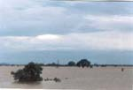
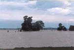
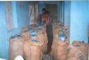
Level of
water(middle)
Level of water(bank)
Packing of Relief items
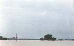 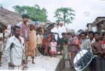
Level of water
Level of water(Electrical Roof)
Relief distribution in Progress
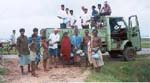
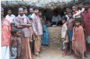
Relief Trucks
Relief Monitoring with Concern
Enumeration of Beneficiaries
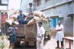 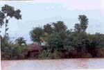
Relief
work in progress
Relief Materials being Transported
Mantri Sahi village in Dompada Block
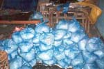
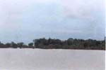 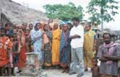
Food Packets(Flat Rice & Sugar)
Some houses submerged in Bilipada
Women Group being assessed
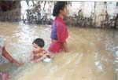
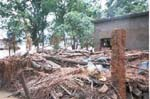
Walking on the
Road
Houses Destroyed
Village submerged in water
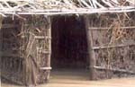
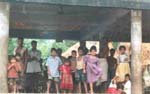
House submerged in
water
Children Relocated
Houses destroyed
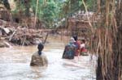
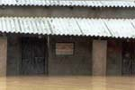 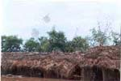
Women crossing the Road
School submerged in water
Houses submerged in Bara Padampur
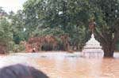
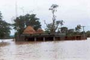
Temple Submerged
Godown for Relief Materials
Another School in Bara Padampur
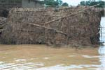
Condition of houses
People Staying over the Roof
Kwanli interacting with Beneficiary
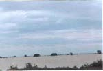
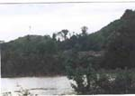 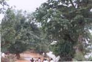
Water level on the Roads
People relocated in Mountain
People waiting for Hours in Roads
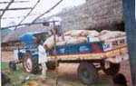
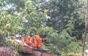
Relief Materials
Nakula Behera did not eat for four days
Staying over Roof
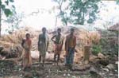
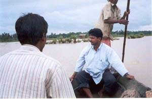
Their House Collapsed in Flood
Flood operation through boat
|